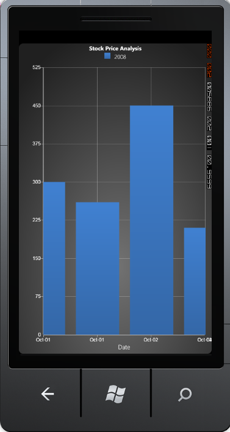

The Format Settings topic guides you to set the value type for the axis labels. Assume that you have set the ValueType as DateTime. The Axis can render the date time values in the chart in between some defined range, which is specified using DateTimeRange property. You can specify the interval for the range using DateTimeInterval property. By default, the interval is 1. The chart will be rendered with the specified date time range and intervals, using the above properties, only when the IsAutoSetRange property is set to false.
 Note: If the AutoSetRange property is set to true,
then the chart will be rendered with a default data time range, ignoring the
above settings.
Note: If the AutoSetRange property is set to true,
then the chart will be rendered with a default data time range, ignoring the
above settings.
The following code describes the data time range settings.
|
[XAML]
<syncfusion:ChartArea.PrimaryAxis> <syncfusion:ChartArea.PrimaryAxis> <syncfusion:ChartAxis IsAutoSetRange="False" ValueType="DateTime" DateTimeRange="4/27/2009,05/06/2009" DateTimeInterval="1" LabelDateTimeFormat="MMM-dd"> <syncfusion:ChartAxis.Header> <TextBlock Text="Date" FontSize="15" TextAlignment="Center"/> </syncfusion:ChartAxis.Header> </syncfusion:ChartAxis> </syncfusion:ChartArea.PrimaryAxis> |
|
[C#]
chart.Areas[0].PrimaryAxis.DateTimeRange = new DateTimeRange(new DateTime(2009, 04, 27), new DateTime(2009, 05, 06)); chart.Areas[0].PrimaryAxis.DateTimeInterval = new TimeSpan(1, 0, 0, 0); |
The following image is the output for the above stated codes.

Figure 95 : Date-Time Range Between DateTime (2009, 10, 01) and DateTime (2009, 10, 04)